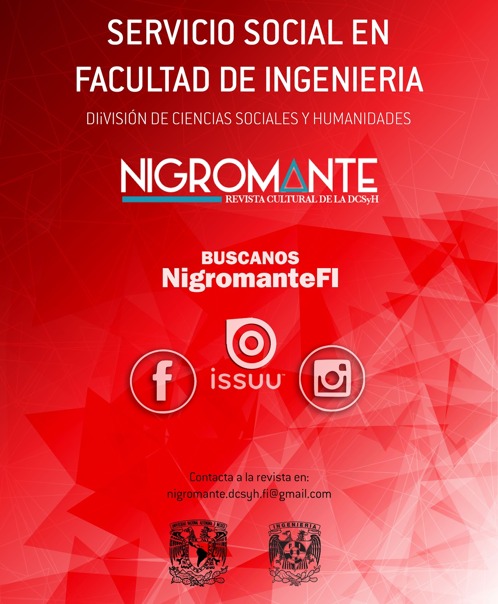
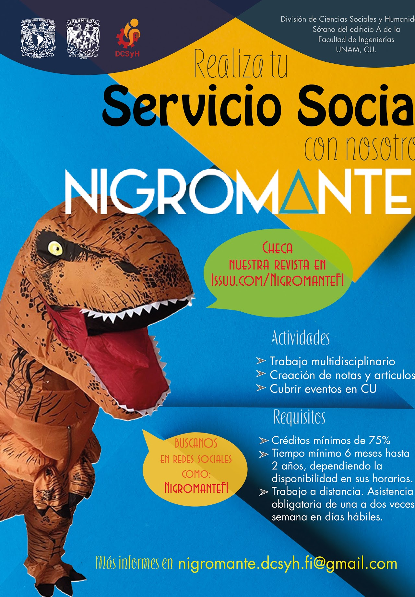
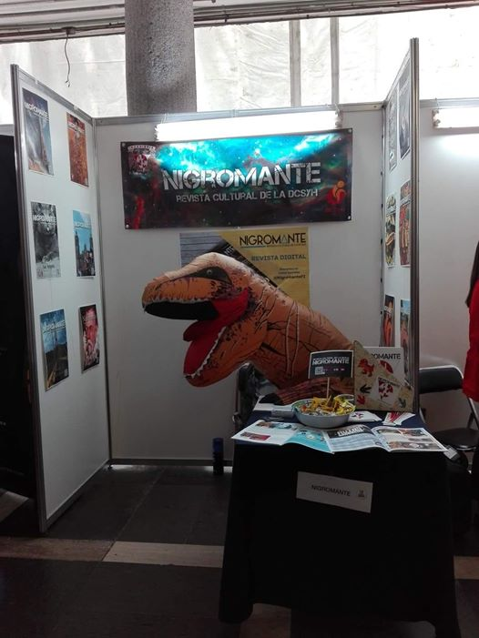
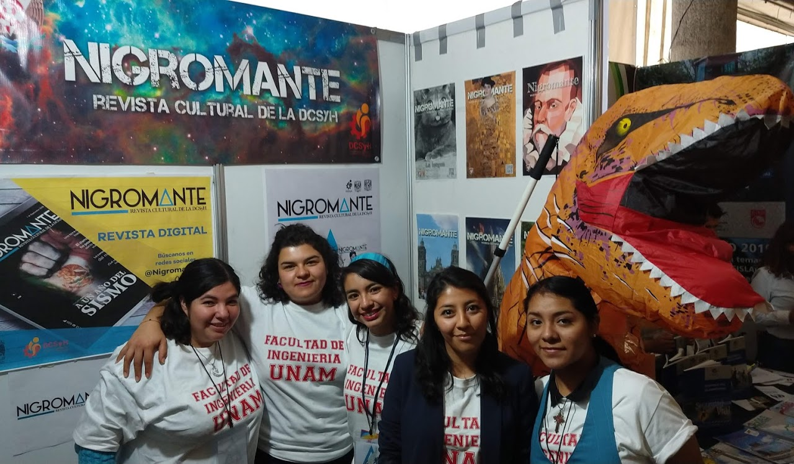

Tiempos para realizar servicio social
-
El servicio social se podrá realizar durante un periodo mínimo de 6 meses
y un máximo de 2 años. La relación de horas mínimas a la semana, de modo
bimestral, es la siguiente:
- 6 Meses 20 horas a la semana
- 8 Meses 15 horas a la semana
- 10 Meses 12 horas a la semana
- 12 Meses 10 horas a la semana
- 20 Meses 6 horas a la semana
- 24 Meses 5 horas a la semana
De acuerdo con el Artículo 7 del Reglamento General del Servicio Social
de la Universidad Nacional Autónoma de México,
“... Se entenderá que existe discontinuidad cuando sin causa justificada se
interrumpa la prestación del servicio social por más de 18 días durante 6 meses,
o en su caso 5 días seguidos. Los días se entienden como hábiles.”
Aceptación de prestadores de servicio social
-
Para prestadores de estudiantes de ingeniería (todas las carreras):
a) Mínimo de 35% de créditos:
- De 35% de créditos en adelante con un período mínimo recomendable de un año.
- De 50% de créditos en adelante con un período mínimo recomendable de 10 meses.
- De 65% de créditos en adelante con un período mínimo recomendable de 8 meses.
- De 80% créditos en adelante con un período a elegir desde los 6 meses.
b) Asistencia presencial con base a sus horarios escolares y/o de trabajo
(Sujeto a disponibilidad de computadora en oficina)
- Matutino: De 10am a 2pm
- Vespertino: De 2pm a 7pm
- Mixto
-
Prestadores externos a la Facultad de Ingeniería:
- Con un mínimo de 70%-75% (dependiendo de los lineamientos de su facultad).
- De mínimo 6 meses hasta 2 años, dependiendo la disponibilidad en sus horarios.
- Asistencia obligatoria de una vez por semana en días hábiles para ver avances (preferentemente presencial).
- Nota: en la entrevista del solicitante se contemplarán la carga escolar y/o de trabajo y su periodo vacacional
para asignar, a beneficio del mismo, su estancia, tal que no perjudique su situación académica
(cancelar o abandonar el servicio social).
- Pueden llevar su propio equipo de cómputo.



Actividades a realizar dentro del servicio social.
-
Para prestadores de la Facultad de Ingeniería:
- Ayuda a académicos durante su estancia.
- Generar artículos de divulgación para la Revista Nigromante
- Relacionados con el tema del mes.
- Relacionados con el mes en cuestión.
- Relacionados con intereses personales.
- Redes sociales.
- Creación de contenido audiovisual.
- Programación de publicaciones diarias.
- Actualizaciones de bases de datos Nigromante.
- Cobertura de eventos dentro de la facultad.
-
Para prestadores de la Facultad de Ciencias Políticas y Sociales:
- Aplica para todas las áreas.
- Generar artículos de divulgación para la Revista Nigromante.
- Relacionados con el tema del mes.
- Relacionados con el mes en cuestión.
- Relacionados con intereses personales.
- Cobertura de eventos dentro de la facultad.
- Producción Audiovisual.
- Generar contenido para el canal de Youtube Nigromante.
- Periodismo.
- Programación de preguntas para entrevistas y contenido relacionado a su área.
-
Para prestadores de la Facultad de Artes y Diseño:
- Edición editorial de la revista mensual Nigromante.
- Creación de contenido audiovisual para redes sociales.
- Creación de contenido original para la revista Nigromante.
- Creación de contenido para la página web Nigromante.
-
Para prestadores de la Facultad de Filosofía y Letras:
- Aplica para todas las áreas.
- Generar artículos de divulgación para la Revista Nigromante.
- Relacionados con el mes en cuestión.
- Relacionados con intereses personales.
- Fungir como editor de la revista mensual Nigromante.
- Corrector de estilo de los artículos recibidos para su posible publicación en la revista.
- Corrector de estilo para las publicaciones en redes sociales.
-
Independiente de la carrera en curso:
- Podrán participar en los eventos promocionales de la Revista Nigromante.
- Podrán realizar textos relativos a alguna actividad cultural que haya cubierto el prestador.